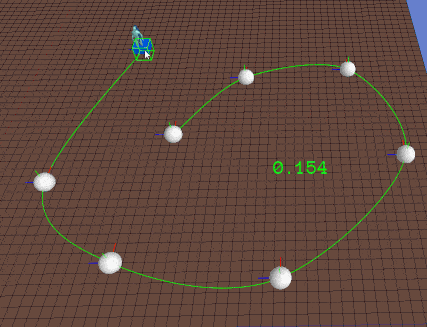

A simple piecewise linear over existing interpolation.

I first linearized the spline.
void LinearisedPath()
{
if (queuePath_->GetControlPoints().Size() > 2)
{
Spline spline = queuePath_->GetSpline();
int size = queuePath_->GetControlPoints().Size();
double rate = 0.001f;
splinePath_.Clear();
for (float f = 0.f; f <= 1.0f; f += rate)
{
Vector3 b = spline.GetPoint(f).GetVector3();
splinePath_.AddKnot(b);
}
}
else if (queuePath_->GetControlPoints().Size() == 2)
{
splinePath_ = queuePath_->GetSpline();
}
}
Then loop through like below.
Vector<Variant> knots_ = splinePath_.GetKnots();
int size = knots_.Size();
int segment = 1;
float sumLength = 0.0f;
for (; segment < size; segment++)
{
float segmentLength = (knots_[segment].GetVector3() - knots_[segment - 1].GetVector3()).Length();
sumLength += segmentLength;
if (sumLength >= relativeDistance)
break;
}
if (segment == size)
{
segment--;
}
Vector3 dir = knots_[segment].GetVector3() - knots_[segment - 1].GetVector3();
dir.y_ = 0;
dir.Normalize();
Vector3 pos = knots_[segment].GetVector3() - dir * (sumLength - character->relativePosInQueue_);
Quaternion Q;
Q.FromLookRotation(dir);
Q.Normalize();
character->GetNode()->SetRotation(Quaternion());
character->GetNode()->SetWorldRotation(Q);
character->GetNode()->SetWorldPosition(pos);
I recommend we have dynamic number of interpolate segment increases with number of control points. This will remove the debug line drawn bug.